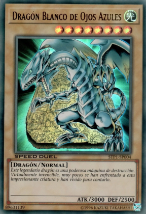

Dragón Blanco de Ojos Azules
ATK/DEF: 3000 / 2500
Tipo: Dragón / Normal
Modo de Juego: Ideal para invocaciones de fusión y control del campo. Es una carta de alto poder ofensivo y simbólica del arquetipo Ojos Azules.
Curiosidades: Fue lanzada originalmente en 1999 y es considerada una de las cartas más icónicas del universo Yu-Gi-Oh. Representa la fuerza, el orgullo y la devoción del duelista Seto Kaiba.
← Volver a la galería